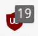
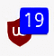
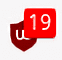

LocalCDN is a web browser extension that emulates Content Delivery Networks to improve your online privacy. It intercepts traffic, finds supported frameworks/libraries locally, and injects them into the website. Feel free to use the following testing utility to find out if you are properly protected. For more information read the tutorial or our Wiki pages.
In most cases LocalCDN can easily replace embedded frameworks and improves privacy. In some cases the website may try to prevent this by setting certain options in the HTML source code. LocalCDN reads the HTML source code before it is displayed in the browser and removes these part (red).
The HTML filter turns this line (blue and red)
<script src="https://cdnjs.cloudflare.com/ajax/libs/jquery/3.6.0/jquery.min.js" integrity="sha512-894YE6QWD5I59HgZOGReFYm4dnWc1Qt5NtvYSaNcOP+u1T9qYdvdihz0PPSiiqn/+/3e7Jo4EaG7TubfWGUrMQ==" crossorigin="anonymous"></script>
into this one (only blue)
<script src="https://cdnjs.cloudflare.com/ajax/libs/jquery/3.6.0/jquery.min.js"></script>
Why is it necessary to remove crossorigin and integrity attributes?
The crossorigin attribute prevents the replacement because the source is no longer cdnjs.cloudflare.com/ajax/libs/jquery/1.12.4/jquery.js but moz-extension://UUID/resources/jquery/1.12.4. crossorigin forces the browser to ignore other sources.
To save disk space and to deliver more frameworks LocalCDN upgrades a framework. An integrity tag is the hash value of a file. If the check fails, the browser won't include a framework. The integrity check will fail because the hash values for e.g. jQuery 1.10.1 and jQuery 1.12.4 are different.
Unfortunately, it sometimes happens that special characters are then displayed incorrectly. In this case you can deactivate the setting again, to display the umlauts correctly.
If you want to automatically redirect all supported CDN connections to LocalCDN, you can add these rules to your adblocker to allow these redirections.
If you do not want to add these rules, you must allow each CDN connection individually for each website.
Only uBlock Origin:
These rules are only relevant in "medium" or "hard" mode, because it blocks all 3rd-party resources. They are not necessary in "default", "easy" or "very-easy" mode. For more information, please visit the uBlock Origin Wiki.
| Icon | Mode | Rules useful | uBlock Wiki |
|---|---|---|---|
|  | Default/Easy | No | Link (github.com) |
|  | Medium | Yes | Link (github.com) |
|  | Hard | Yes | Link (github.com) |
There are two possible reasons: Either a framework/library is required that LocalCDN doesn't (yet) deliver or an SOP.
A SOP (Same origin policy) is a security mechanism that determines what data the browser is allowed to load. It helps to isolate malicious documents and thus reduce possible attack vectors. This policy prevents the browser from loading the external frameworks of LocalCDN.
If the layout of a website is incorrect or cannot be used, then it is usually due to this policy, even though the add-on works flawlessly. Unfortunately there is no solution for this at the moment.
LocalCDN can replace "Google Material Icons". To catch the connection your adblocker (e.g. uBlock Origin, uMatrix or AdGuard) must allow the request. LocalCDN listens on these requests and if the query contains "Google Material Icons", the resource will be replaced. If you uncheck the "Block requests for missing content" option, non-existent resources will be allowed to pass and "Google Fonts" will be loaded, because "Google Material Icons" and "Google Fonts" use the same domain. If you don't want this, you can block "Google Fonts" on LocalCDN.
Don't panic, nothing will be transmitted. It would be against all my principles. The statistics (JSON format) contains the following information: Date, CDN+counter and framework+counter. That's all. I've an example here:
"2020-08-10": {
"frameworks": {
"resources/jquery/1.12.4/jquery.min.jsm": 5
},
"cdns": {
"ajax.googleapis.com": 5
}
}
The statistics contain no information about the browser, operating system, requesting website, IP addresses or any other information. Just date, CDN+counter and framework+counter. It shows you which frameworks are replaced by LocalCDNs how often and which CDNs were requested.
How do I know that's true?
The extension storage can be viewed directly with the Firefox browser. Open the URL "about:debugging", switch to "Storage" and select "Extension Storage". Under the key "internalStatisticsData" you will find the collected data. Just copy it and put it into a JSON PrettyPrinter to make it more readable. Please note that you have to remove the first and last quotation mark and the key to it. You should be able to see this clearly in this video.
Sync will only work if you are logged in with a Firefox account on the device and have allowed add-ons to sync in the settings. A separate sync server under your control will also work. This will synchronize most of the settings of LocalCDN across all devices.
If you don't have a sync account, nothing will be synchronized. In that case it makes no difference what type of storage you have selected.
Things that are never synchronized:
Settings that will be synchronized:
More information about Firefox Sync:
The following things are supported only by Firefox: